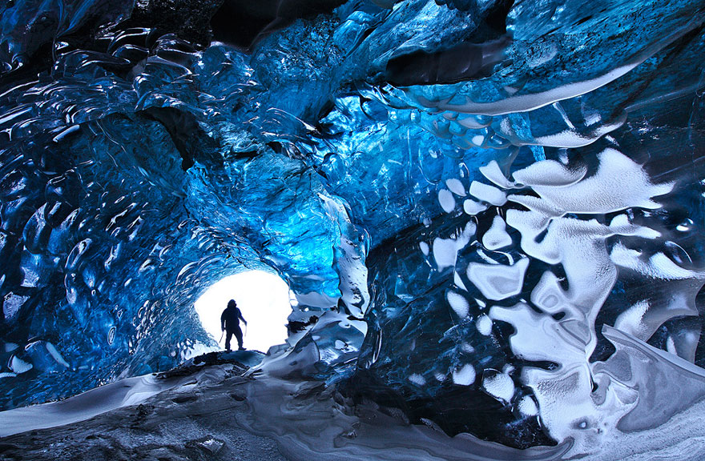

|
Національний північно-східний парк Гренландії – це найбільший заповідник в світі. Він тягнеться більш ніж на 900 тисяч км. На такій величезній території могли б розміститися кілька держав! Парк знаходиться на північному сході Гренландії. Це не тільки найбільший парк, але і один з самих важкодоступних заповідників планети. Туристам сюди добратися не так-то просто, адже в Гренландію можна тільки прилетіти на літаку, а на самому острові практично немає доріг. Велика частина суші покрита льодом і багатовіковими снігами. Льодовиків тут стільки, що якщо вони все розтане, то рівень світового океану підніметься приблизно на 8 метрів. Пейзажі в Гренландії суворі, але в той же час чудові: снігові пагорби, айсберги і фіорди. Льодовик це багаторічне природне накопичення льоду на земній поверхні. Утворюється з твердих атмосферних опадів у тих районах, де протягом року таких опадів випадає більше, ніж тане та випаровується. У багатьох льодовиках тала вода промивае величесні полості - льодовикові печери. Також печера може утворитися під льодовиком завдяки пересуванню льоду по нерівній земній поверхні. Крижані та льодовикові печери - дивовижне чудо природи, а багато турів на льодовики включають відвідування таких печер. Передусім, слід зазначити, що крижані й льодовикові печери - різні речі. Льодовикова печера - це порожнина в тілі льодовика, в той час, як крижана - це печера, в якій завдяки її розташуванню та конфігурації, скупчуються крижані відкладення. Такі печери працюють за принципом холодового мішка: взимку холодне повітря затікає всередину і проморожує печеру, а влітку холодне дно мішка охолоджує повітря і не дозволяє витіснити його теплому зовнішньому. Тому крига зберігається цілий рік у формі замерзлого озера і бурульок. |
|  |
|
Парк відкрився ще в1974 м на безлюдній частині Гренландії. Пізніше до нього додали кілька тисяч квадратних км. Сьогодні цей парк має статус біосферного заповідника. Звичайно, люди на території заповідника не проживають, однак тут розташовані наукові станції і військові бази зі спеціальним персоналом. Мешканці парку зовсім інші. Так, на території парку мешкають від 5 до 15 тисяч вівцебиків. Це приблизно 40 % від всіх особин планети. Також у прибережних районах можна зустріти безліч білих ведмедів і моржів. А ще тут багато інших тварин: песці, тюлені, горностаї, північні олені, кити, нарвали, лемінги, арктичні зайці та інші. |
|
Рослинність парку досить бідна та з'являеться тільки літом: це обумовлено кліматичними умовами. В основному тут ростуть мохи і лишайники, іноді зустрічаються карликові верби і берези. |
|
Влітку парк сповнений різноманітних птахів. Серед них можна виділити гагару, білу куріпку, кречета і білу сову. |
|
Парк не належить до жодної з комун, він перебуває під управлінням ґренландського департаменту природи та довкілля. Окрім того, це єдиний національний парк у Гренландії. |